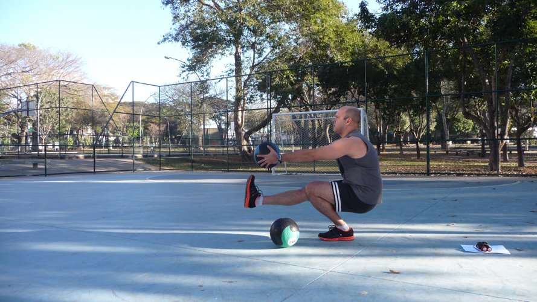
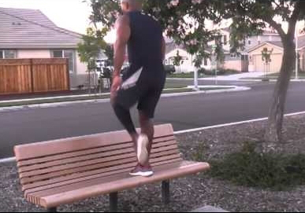
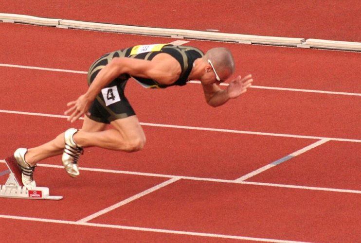

When we talk about knee-dominant exercises, we are talking about lower body/ leg exercises where the primary element of the exercise involves the bending of the knee. This distinction is important, as most lower body exercises will involve bending at the knee as well as bending at the hip in the same movement, but it will be the extent of either that will determine whether the movement is a knee-dominant exercise or a hip-dominant one.
Knee-dominant movements build strength in the thigh/ quadriceps more than anything else, but will also strengthen the rest of the legs to a lesser extent too, particularly the hamstrings and glute muscles. The main exercise in this family of movements is the well known squat, although equally viable alternatives exist to work the legs.
The squat
Almost as recognisable as the pushup, the squat is simply where you squat down with your lower body, and raise yourself again with your legs. A full-body powerhouse, the squat is a very effective exercise on many levels, and particularly so for the legs.
Initially, focus will be on two-legged forms of the movement, but like many other bodyweight exercises, in order to continue progressing when we reach more advanced levels, focus will then move onto one-legged versions of the movement.
Non-squat alternatives
 Deep step-ups represent a viable alternative to squatting, where with one of your feet you simply step up onto a raised platform, and step back down again. Progression is managed through changing the height of the platform, as well as altering how much support the non-active foot provides.
Sprinting is another great alternative option, and provide a powerful stimulus for growth and strength in the legs when incorporated into your bodyweight training programme. To lower some of the stresses on the joints, hill-sprints are an equally viable option, and an effective way to build strength in the posterior chain of the body also.